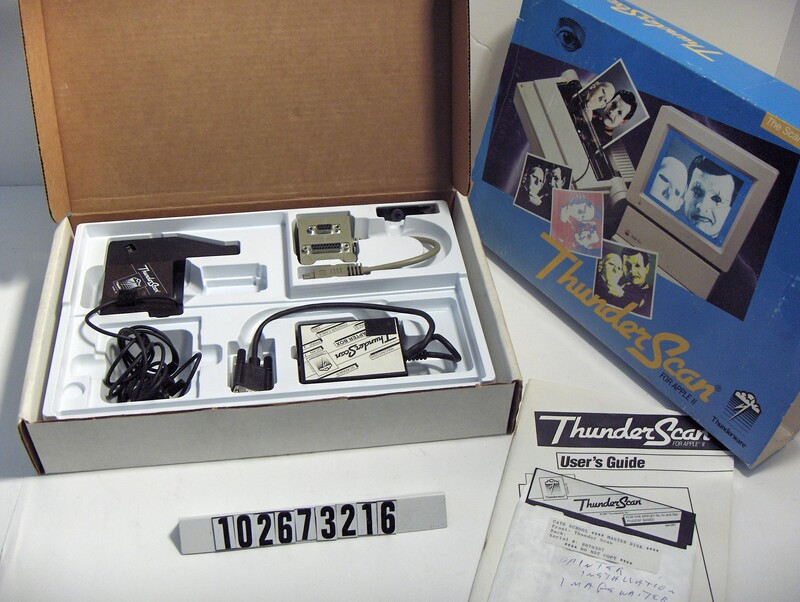
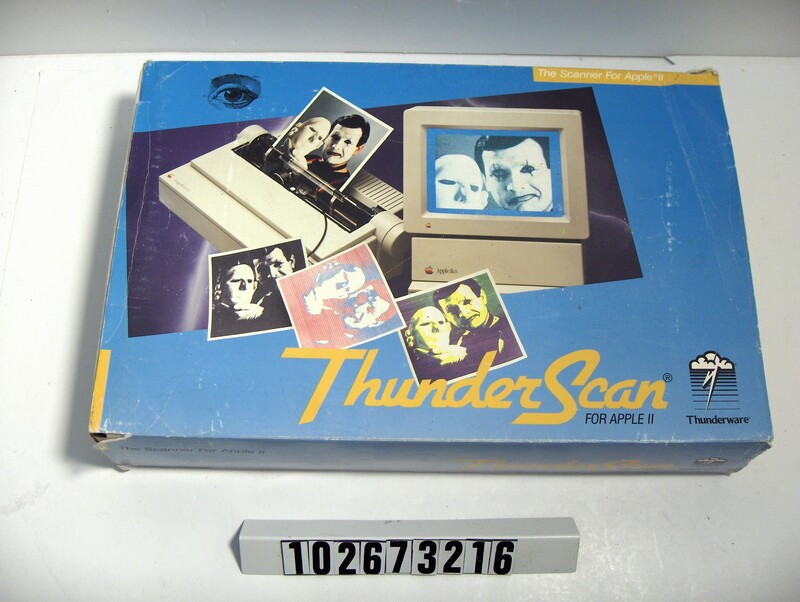
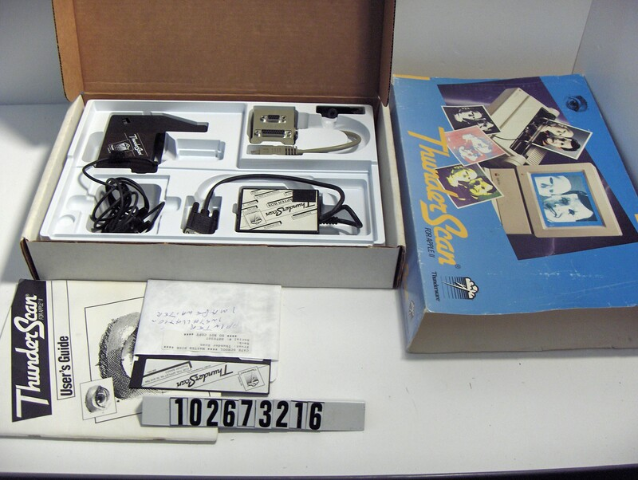

ThunderScan
Swap out your printer's ribbon and the printer becomes a scanner

Overview
ThunderScan, shipped December 1984 by Thunderware, Inc. of Orinda, California, turned an Apple ImageWriter dot-matrix printer into a high-resolution scanner at under $200 — a fraction of the price of the flatbed scanners of the day. The trick: the ribbon cartridge is removed and replaced with a ribbon-shaped housing containing an optical sensor array, connected by an umbilical cable to an interface box and then to the computer. You thread the document or photograph through the printer's platen like paper. The print head shuttles across the page one scan line at a time — about nine times slower than printing — while the sensor reads reflected light.
The interaction is deliberately mechanical and slow. At maximum resolution a full page could take over an hour of loud shuttling. Thunderware's hardware engineers Tom Petrie and Victor Bull solved the paper-bunching problem by commanding the printer to move three steps up and then two steps back per line, holding the paper snug against the platen. The scan resolution came from the precision of the printer's stepper motors, which had to be accurate to print fine graphics — so ThunderScan captured better resolution than flatbeds costing more than ten times as much.
The Macintosh software was written by Andy Hertzfeld during his 1984 leave of absence from Apple, for a $7.50-per-unit royalty. He used Bill Atkinson's modified Floyd-Steinberg error-diffusion dithering to render 32 levels of gray as patterns of black and white dots, kept five bits per pixel of gray-scale data (before the Mac generally supported gray scale), and invented "inertial scrolling" — pushing a large image and letting it coast — in the scanning app. Sales rose from about 1,000 units a month to over 7,500 a month at the 1987 peak; roughly 100,000 units sold over its lifetime before cheap flatbed scanners caught up.
Deep dive
The defining act: remove the black plastic ribbon cartridge from the ImageWriter and snap in the ThunderScan cartridge, an optical sensor array in a ribbon-shaped housing with an umbilical cord. The printer's print-head mechanics — its stepper motors and shuttle — become the scanning mechanism. Resolution is set by the printer's mechanical precision, not by optics: a $500 printer plus a $200 cartridge out-resolved flatbed scanners costing ten times more.
The ImageWriter was not designed to advance one scan line at a time; doing so made the paper bunch against the platen and distort the image. Petrie and Bull fixed it by commanding the printer to move three steps up and two steps back per line, which held the paper snug. Timings had to be worked out by tedious experimentation. Hertzfeld's account preserves this as the kind of hardware hack that made the product work at all.
The hardware captured up to 32 levels of light intensity (five bits per pixel), but both the Apple II and the early Mac could only display one bit per pixel. Tom Petrie's Apple II software used a simple threshold that looked blotchy; Hertzfeld adopted Bill Atkinson's modified Floyd-Steinberg error-diffusion algorithm for the Mac version. Keeping the five-bit gray-scale data around let users dodge and burn contrast in selected areas, and later versions supported gray-scale printing to PostScript printers.
ThunderScan documents were large, and dragging a MacPaint-style hand tool to reach the edges was tedious. Hertzfeld added what he called "inertial scrolling": give the image a push and it keeps scrolling at a variable speed after the mouse button is released, with hysteresis to prevent accidental motion. It is an early instance of a physical metaphor — momentum — in a desktop interface.
The Computer History Museum holds a complete ThunderScan for Apple II (catalog 102673216): box, slide-on cover, floppy disk, user's guide, scanner unit with a ThunderScan logo sticker, adapter box, a beige dongle, and a small black plastic piece. The floppy sleeve is hand-marked "PRINTER INSTALLATION IMAGEWRITER."
Team & pioneers
- Thunderware, Inc. Tiny Orinda, California company (formerly makers of the Thunderclock) that developed and sold ThunderScan.
- Tom Petrie Co-founder; hardware and Apple II software; his prototype demo was a photograph of a cat threaded through an ImageWriter.
- Victor Bull Co-founder; hardware designer (previously co-designed Apple's Silentype thermal printer); solved the paper-bunching problem.
- Andy Hertzfeld Wrote the Macintosh software during his leave of absence from Apple; inventor of inertial scrolling; $7.50/unit royalty.
Media

